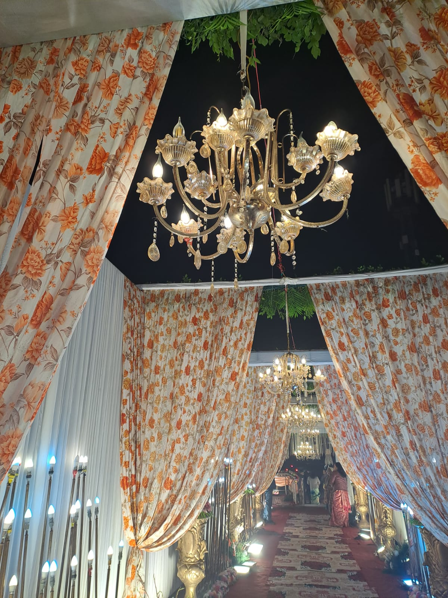
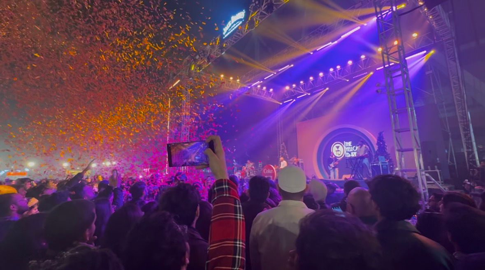
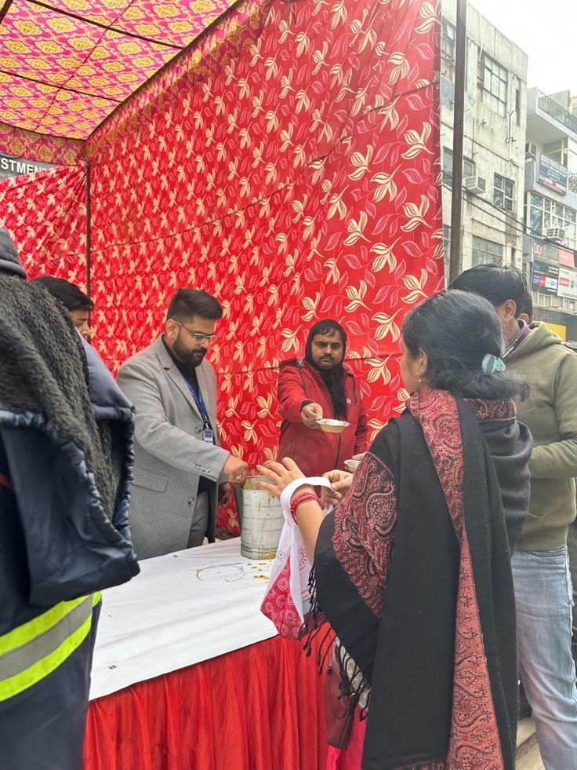
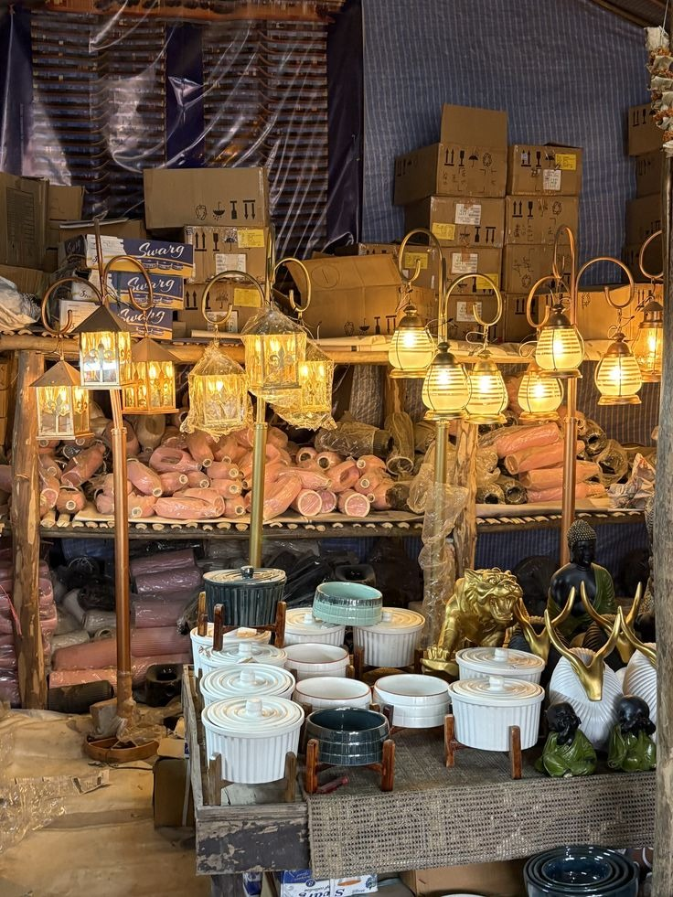
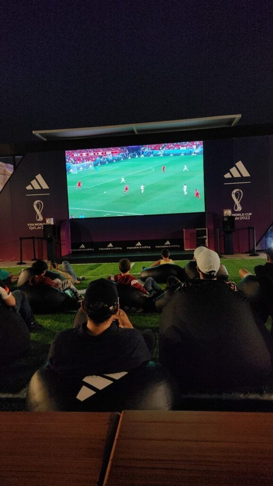
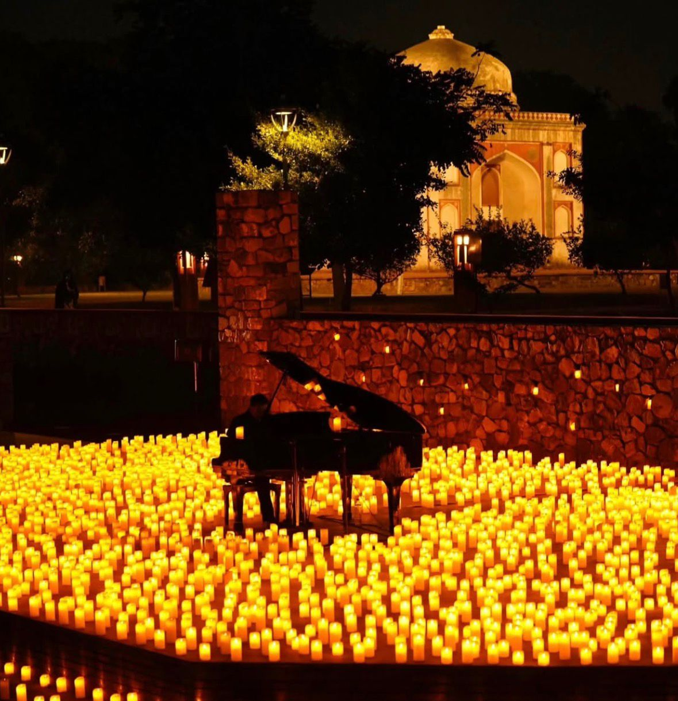
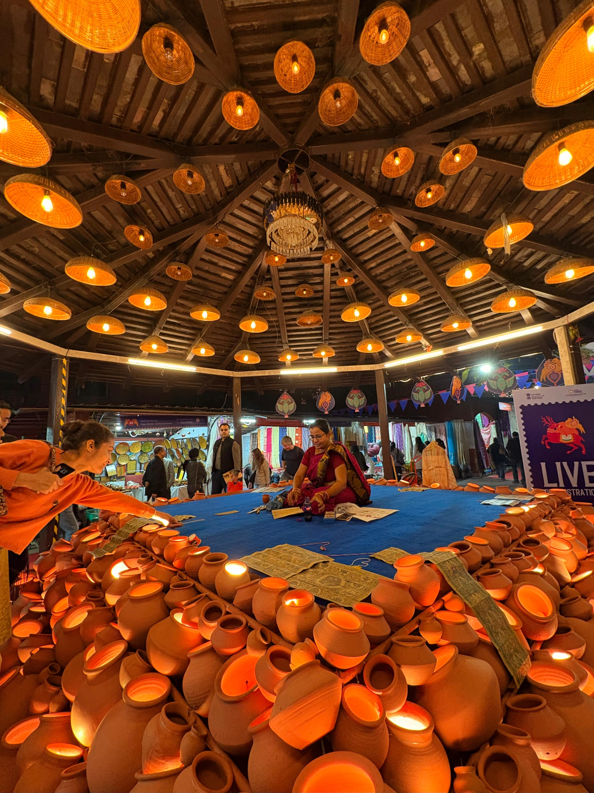

Each entry captures a structure that briefly transformed space.

A fleeting space of celebration
Space of political expression
Devotion merged with spectacle
Fleeting urban exchange

Shared sonic experience
Temporary world of stories

A shared meal that turns a moment into a memory of collective care.

A temporary market where discarded stories find new lives, then move on again.

A temporary screen that turns strangers into a shared crowd, if only for a moment.

A glow where music and light hold time still, then quietly fade.

Momentary architecture